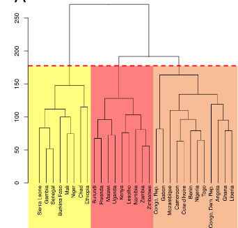
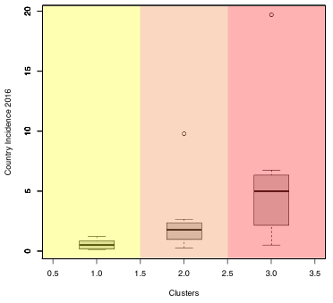
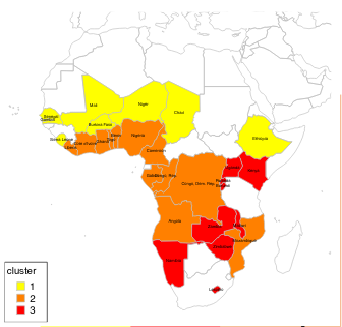
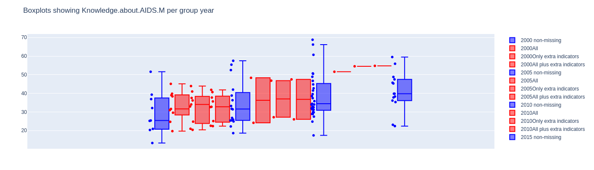
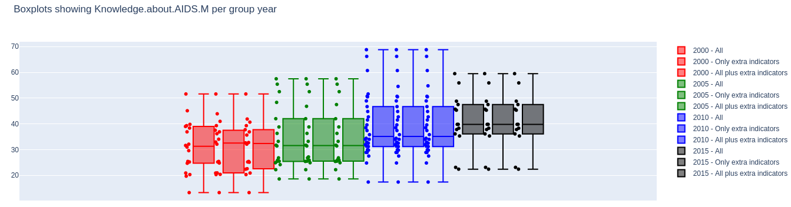
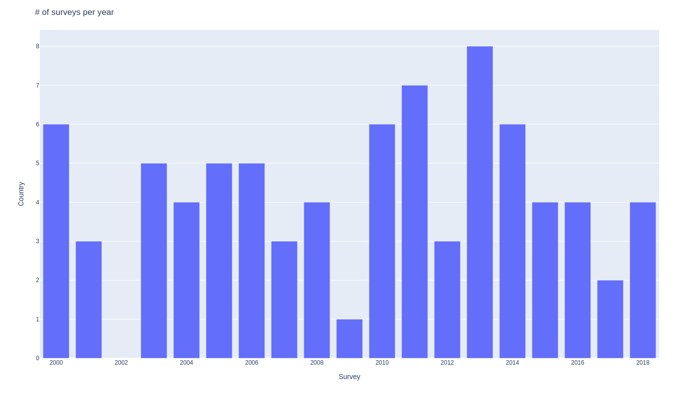
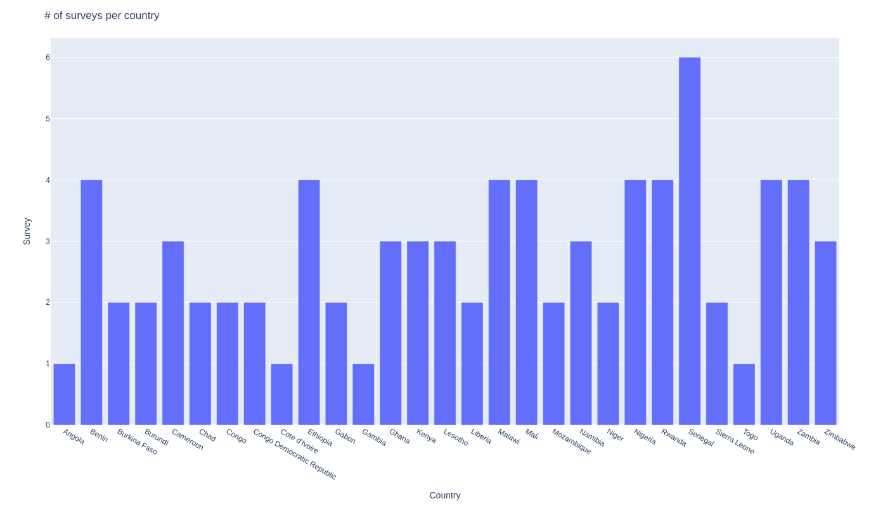

Sociobehavioral characteristics & HIV incidence
A longitudinal study in sub-Saharan Africa
A longitudinal continuation of original cross-sectional study:

"Clusters of sub-Saharan African countries based on sociobehavioural characteristics and associated HIV incidence"
Aziza Merzouki, Janne Estill, Erol Orel, Kali Tal, Olivia Keiser
Review of original cross-sectional study:
Why?
- Wide variation of HIV incidence in SSA
- Substantial SB heterogeneity
- Investigate link between the two
Methods
- Most recent DHS data for 29 SSA countries
- 48 behavioural and HIV related indicators
- PCA:
- Visualize country similarities on reduced PCA space
- Identify indicators that contribute most to variance in SB space
- Cluster similar countries together
- Compare HIV incidence within and between each clusters
Results
- 3 clusters
- HIV incidence mostly similar within each cluster
- HIV incidence mostly different between each clusters
Review of original cross-sectional study (2):



2 main limitations of cross-sectional study
- Nationally-aggregated data prone to ecological fallacy
- Impossible to determine precedence and causality between SB characteristics and HIV incidence
Reason for a longitudinal study
- Evolution of those 29 countries over time in SB space
- Evolution of HIV incidence over the same period
- Explore link between the two
Study only as good as data used
- Historical data would be easy to find
- Countries would have many surveys spanning many years
- Original 48 indicators would always be present
- Historical data would be easy to find
- DHS data prior to 2000 can be unreliable
- Countries would have many surveys spanning many years
- Countries have few and irregularly timed surveys
- 48 original indicators would always be present
- Many latent/missing values in the surveys
- Many HIV indicators only started in the early 2000s
Strategy
- Use only surveys from 2000 and later
- Missing data
- Find alternate source for indicator
- Impute missing data


Resulting data
- Same 29 countries present with each between 1 and 5 surveys between [2000-2018]
- 46 indicators (2 less because W/M distinction lost when finding alternate source of data)


Not starting from scratch, but from cross-sectional study.